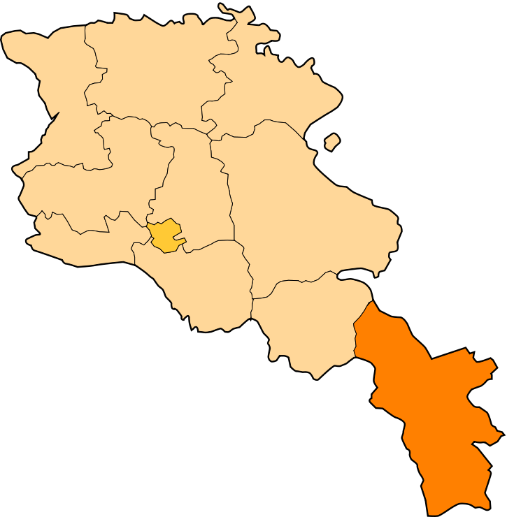

Հետ գնալ
Սյունիքի մարզ
Սյունիքի մարզ, ամենաբարձր կարգավիճակ ունեցող վարչատարածքային միավոր Հայաստանի Հանրապետության հարավում։
Հյուսիսում սահմանակից է Հայաստանի Հանրապետության Վայոց ձորի մարզին, հյուսիս-արևելքում՝ Արցախի Հանրապետության Շահումյանի շրջանի քարվաճառյան հատվածին և Քաշաթաղի շրջանին,
հարավում՝ Իրանի Իսլամական Հանրապետությանը Արևելյան Ադրբեջան նահանգին, արևմուտքից՝ Ադրբեջանի Հանրապետության կազմում ընդգրկված Նախիջևանի Ինքնավար Հանրապետության Ջավախքի,
Օրդուբադի և Շահբուզի շրջաններին։
Սյունիքի մարզի քաղաքային համայնքների թիվը 7 է՝
Սյունիքի մարզի տարածաշրջաններն են՝
- Գորայք
- Մեղրի
- Տեղ
- Գորիս
- Սիսիան
- Քաջարան
- Կապան
- Տաթև